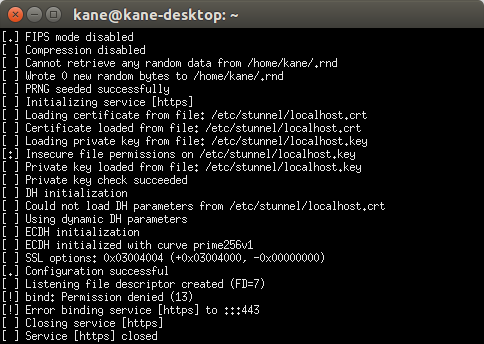
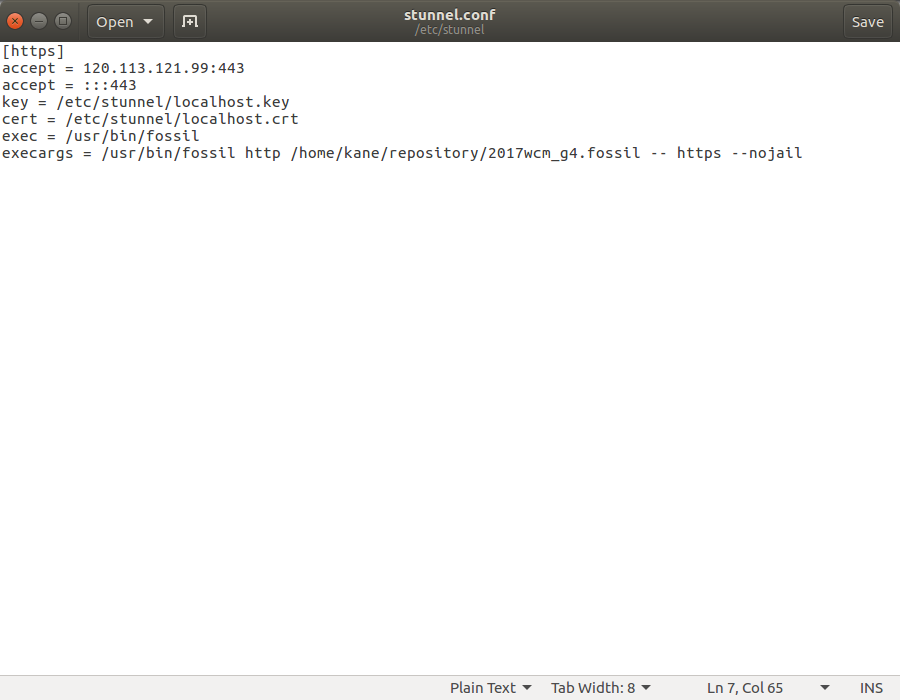

啟動 Stunnel 與 Fossil SCM，失敗！！
2017.04.21
在最後設定HTTPS完成後，stunnel 始終無法取得port 443，透過指令查詢也沒有其他軟體佔用，上網嘗試尋找答案，發現port小於1024，都是ROOT使用，嘗試更換其他port也無效，用盡網路上所有方法都失敗，只好等待老師救援。


2017.04.21
在最後設定HTTPS完成後，stunnel 始終無法取得port 443，透過指令查詢也沒有其他軟體佔用，上網嘗試尋找答案，發現port小於1024，都是ROOT使用，嘗試更換其他port也無效，用盡網路上所有方法都失敗，只好等待老師救援。